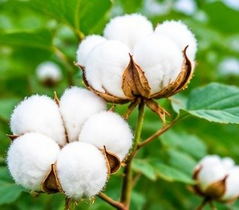
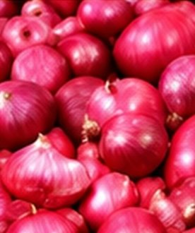
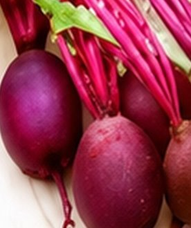

Root Max
Directions for Use
- Shake well before use.
- Mix the dose in clean water.
- Apply in the early morning or evening.
Precautions
- Keep away from children and pets.
- Not for human or animal consumption.
- Store in a cool, dry place away from sunlight.
| MRP | ₹850 / Litre |
|---|---|
| Net Qty | 1 Litre / 1 L |
| Shelf Life | 3 Years from manufacture |
| Manufactured by | Mazhaithuli Organics |
| Marketed by | Groagri Organics |
| FCO Licence No. | க.எண். உரம்1/95384/2026 |
| Customer Care | +91 8925184969 |
How Root Max Helps Your Crops
Coconut
Improves root growth in young palms; the tree grows strong.
Paddy
After transplanting, roots establish well and more tillers emerge.

Banana
Better root growth; the sucker grows strong.
Maize
Roots grow strong and help the plant stand without lodging.

Cotton
Better root growth; the plant grows strong.

Sunflower
Better root growth; the plant grows strong.

Green Chilli
After transplanting, roots establish well and the plant grows strong.

Tomato
After transplanting, roots establish well and the plant grows strong.

Brinjal
After transplanting, roots establish well and the plant grows strong.

French Beans
Better root growth; the vine grows strong.

Broad Beans
Better root growth; the vine grows strong.
Cabbage
After transplanting, roots establish well and the plant grows strong.
Cauliflower
After transplanting, roots establish well and the plant grows strong.

Onion
Better root growth; seedlings establish well.

Beetroot
Better root growth; tuber growth becomes uniform.
Mint
Better root growth; more stems sprout.
Rose
Better root growth; the plant grows strong.

Jasmine
Better root growth; the plant grows strong.

Hibiscus
Better root growth; the plant grows strong.

Marigold
Better root growth; the plant grows strong.